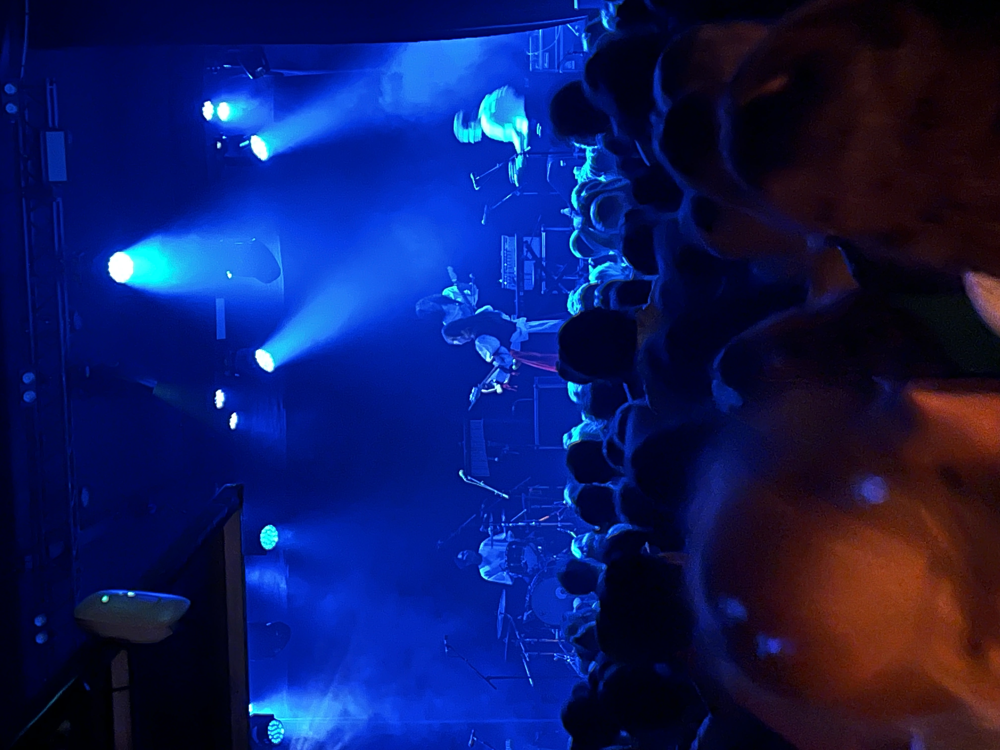
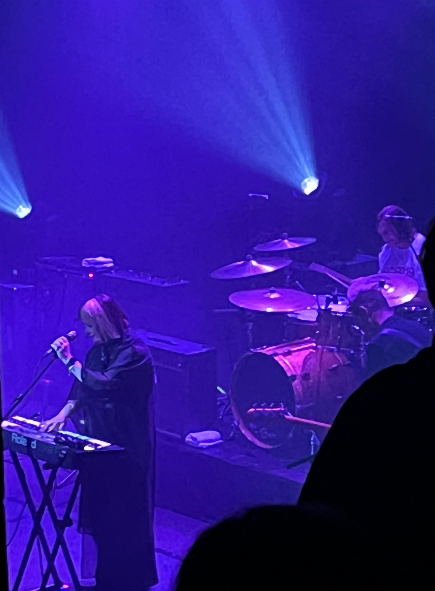
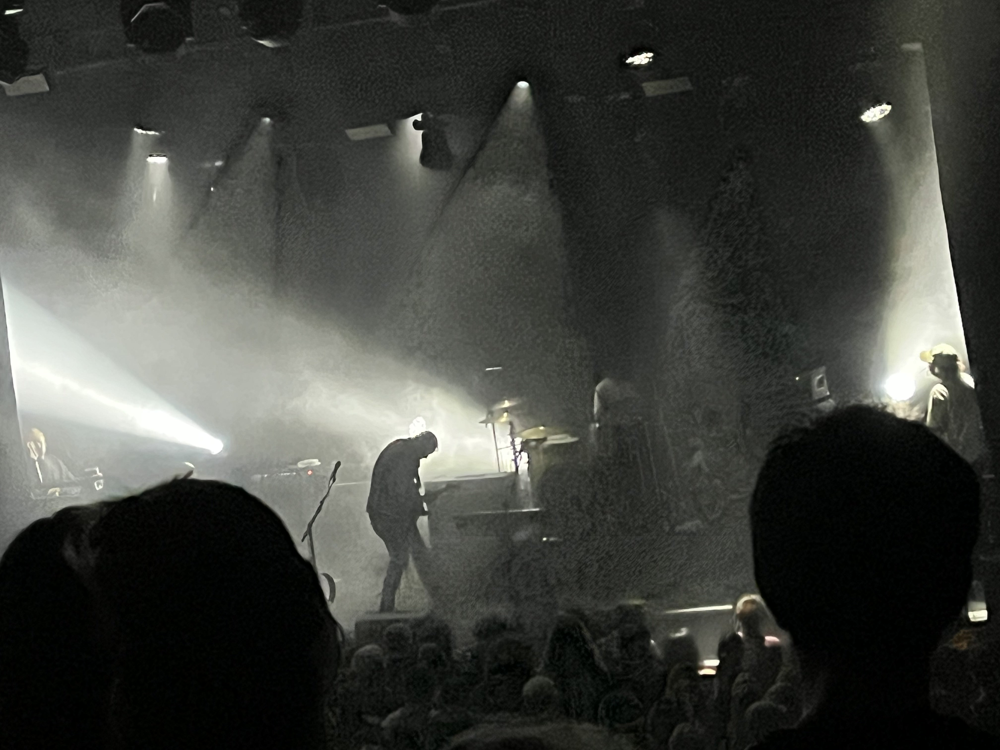

Đầu năm tới giờ tui đi được 3 buổi hoà nhạc. Tới giờ tui vẫn chưa tin được là mấy đêm hôm đó có diễn ra thiệt.
Buổi đầu, tui đi coi chị Julia Jacklin, được anh đồng nghiệp tài trợ.
Hôm đó khoảng 8h, ngoài trời tối om như mực, xa xa không có lấy một tiếng chó sủa, âm thanh thông báo slack bỗng vang lên gấp gáp trên điện thoại tui như xe toạc màn đêm tĩnh lặng. Tôi chột dạ. Hông lẽ sếp đã tìm ra con bug mình merge hồi chiều?
Nhưng thực ra tui đã lo hơi xa. Lúc đó, chỉ là anh đồng nghiệp nhắn qua rủ đi coi ca nhạc. Hoá ra bạn ảnh bận việc đột xuất nên phải bẻ kèo. Còn con bug thì khoảng một tháng sau mới bị phát hiện.
Thế là, dù mới chỉ nghe được một hai bài của chị Julia nhưng vì ham hố vé free nên tui cũng gật đầu đồng ý rồi lật đật thay đồ, kêu Uber.
Đêm nhạc diễn ra khá vui, trừ chuyện tui lùn, nên không ngó được rõ mặt chị ca sĩ. Tuy vậy, đây vẫn là concert đầu tiên đánh dấu lần đầu tui đi coi ca nhạc sau nhiều năm trời.

Lần thứ 2 là band của sếp tui. Thật tình thì tui cũng không nhớ band tên gì, nên mới phải viết bài này bằng tiếng Việt chứ để sếp mà đọc được thì chắc tui thăng chức từ dev lên trưởng phòng tạp vụ mất.
Hôm đó vừa đến văn phòng thì mọi người rủ rê đi coi sếp đánh bass. Không phải bass guitar nhé. Bass mà tui đang nói tới là cây double bass to đùng á. Họ nói band sếp nhỏ nên vé rẻ rề, không đi thì hơi phí. Tui nghĩ trong bụng thấy cũng rẻ thật nên cũng gật đầu. Biết đâu lại hợp gu. Thế là giữa một đêm thứ 7 lạnh lẽo, gió lùa qua những tán cây trơ trọi không có lấy một chiếc lá, tui khoác áo lên xe bus vào trung tâm thành phố.
Trong lúc chờ show thì tui với vài đồng nghiệp rủ nhau đi ăn ở một quán Ấn cách đó vài bước chân. Thấy cái quán cũng vừa vừa, cũng không to hay sang trọng gì mấy nên tui cũng không nghĩ nhiều, nhưng tới lúc tính tiền thì tim tui đau nhói. Thực ra thì quán cũng không hẳn là đắt so với những quán khác nhưng so về độ ngon và no thì tui thấy nó đắt vãi lúa. Có lẽ do tui quê mùa nên chưa quen với mấy nhà hàng “xém fine dining” kiểu này. Đồ ăn có chút éc mà tiền tính chát quá.
Sau đó tụi tui dắt nhau qua show coi. Giữa chừng thì có chị thấy tui lùn, nên chỉ tui lên hàng đầu xem cho rõ. Và tui cũng ngu ngơ gật đầu cười rồi lên xem. Điều tui không ngờ tới là ở hàng đầu người ta quẩy sung quá. Đang chill chill theo nhạc thì có một bạn nữ từ đâu xuất hiện kéo tôi ra nhảy. Tui hốt hoảng vô cùng nhưng hổng lẽ nói hông? Nên cũng đành nhắm mắt nhắm mũi mà theo bước của bạn. Thế là gần sân khấu, cách band nhạc chừng một cánh tay, có một đôi nam nữ nhảy những bước chậm, hoà theo điệu nhạc. Người nữ thì uyển chuyển như nước, người nam thì linh hoạt như một pho tượng. Và sếp tui vừa đánh bass vừa chứng kiến tất cả. Lạy chúa tui chỉ có thể tưởng tượng cái cảnh đó hẳn phải kì quặc đến mức nào cho sếp của tui. May là được một lúc bạn nữ cũng thả cho tui về với đám đông rồi lại tìm nạn nhân tiếp theo…
Tiếc là lần đó tui không có chụp hình tấm nào. Thôi thì coi đỡ mấy tấm ở dưới nghen.
Lần thứ 3 là lần gần đây nhất, cũng có lẽ là lần lạ nhất với tui, vì tui là fan ruột của band này nhưng chưa từng nghĩ rằng mình sẽ có cơ hội xem họ live. Band tui đang nói tới là band lặn chậm (Slowdive) huyền thoại từng tan rã vào năm 1995 và chỉ mới quay lại vào 2014.
Với riêng bản thân tui, những tháng ngày cô độc, lạc lõng giữa những con phố, giữa những dòng người hối hả đã trở nên dễ chịu hơn rất nhiều mỗi khi những âm thanh từ album Souvlaki chui qua chiếc tai nghe cũ. Suốt nhiều năm trời du học, và có lẽ tới giờ vẫn vậy, tui nghĩ rằng âm nhạc của Slowdive là một trong những thứ đẹp đẽ cuối cùng còn sót lại trên cái thế giới mục nát này.
Nên khi lướt Facebook trúng ngay tin nói rằng band sẽ tới thăm thành phố tui đang sống, tui đã lập tức chộp ví đặt vé ngay mà không cần xem giá. Có phải trèo cây mít trốn vé vô xem tui cũng trèo. Bằng bất cứ giá nào cũng phải đi coi cho bằng được. Nhớ không lầm thì hình như tui là người thứ 5 đặt vé lúc mới mở bán. Cũng may là band không nổi như hồng đen nên đặt vé khá dễ dàng.
Lúc đặt vé tui sực nhớ có anh đồng nghiệp cũng là fan của band nên rủ anh đi coi chung, làm ảnh phải năn nỉ vợ cho đi xem và hứa là tầm 10h sẽ về tới nhà. Xin mãi chị vợ mới cho. Thế mà vài tiếng trước khi show diễn ra, tôi phát hiện trên vé nói 8h tối bắt đầu nhưng thật ra đó là band mở màn, còn band chính (Slowdive) thì tận 9h30 mới ló mặt. Thế là kết cục chúng tôi đứng chờ gãy cmn lưng và tui thấy vô cùng có lỗi với chị vợ.
Vài tấm tui chụp hôm đó:

Cô Rachel Goswell nè. Lần đầu thấy ảnh cô những năm 90s tim tui đã skip vài nhịp.
Chú Nick Chaplin với chú Neil Halstead. Ráng chụp hai chú cho đẹp mà lùn quá nên chỉ được thế này.

Cuối show chụp được tấm này nhìn huyền ảo quá.
Bonus thêm vài clip tui quay:
When the Sun Hits.
Kisses. Nhá hàng một bài trong album mới sắp ra mắt tháng 9.
Sleep. Đây là bài đã biến tui thành fan Slowdive.
Cô Rachel kể chuyện cười lol.